경북소프트웨어마이스터고등학교에서 풀스택 개발을 공부하고 있습니다. 팀 프로젝트와 개인 프로젝트 모두 좋아하며, 주어진 일에 항상 열정과 책임감을 가지고 임합니다.
늘 더 나은 개발자가 되기 위해 끊임없이 배우고 성장하려고 노력하고 있습니다.
Language
Frontend
Backend
Database & Tools
크롬 확장프로그램을 활용한 악플 순화 프로그램
유튜브 댓글을 실시간으로 분석해 단순 악플은 숨기고, 피드백이 담긴 악플은 정중한 말투로 순화하여 보여주는 크롬 확장프로그램입니다. 댓글을 초록 / 노랑 / 빨강으로 구분해 직관적으로 표시합니다.
악플 속에도 피드백이 존재한다는 점에 착안해, 단순 삭제 대신 순화를 통해 건강한 소통 문화를 만들고자 제작했습니다.
팀장, 프로젝트 기획, 팀원 간 소통 및 협업 조율, AI 모델 연동 및 테스트 담당, 확장프로그램 프론트엔드 개발
유튜브 댓글을 실시간으로 분석하고 순화하는 과정에서 AI 모델의 성능과 정확도를 높이는 것이 어려웠습니다.
해결AI 모델 성능을 향상시키기 위해 여러 프롬프트를 실험하면서 최적의 결과를 도출할 수 있었습니다.
영상 요약본을 AI에게 함께 제공해 맥락 기반 판단 정확도를 높이고, 유튜브 외 SNS 플랫폼으로 확장할 예정입니다.
팀장으로서 팀원 의욕 관리와 소통의 중요성을 뼈저리게 느꼈습니다. 어려운 상황에서도 팀을 이끌어 완성해낸 경험이 가장 큰 수확이었습니다.
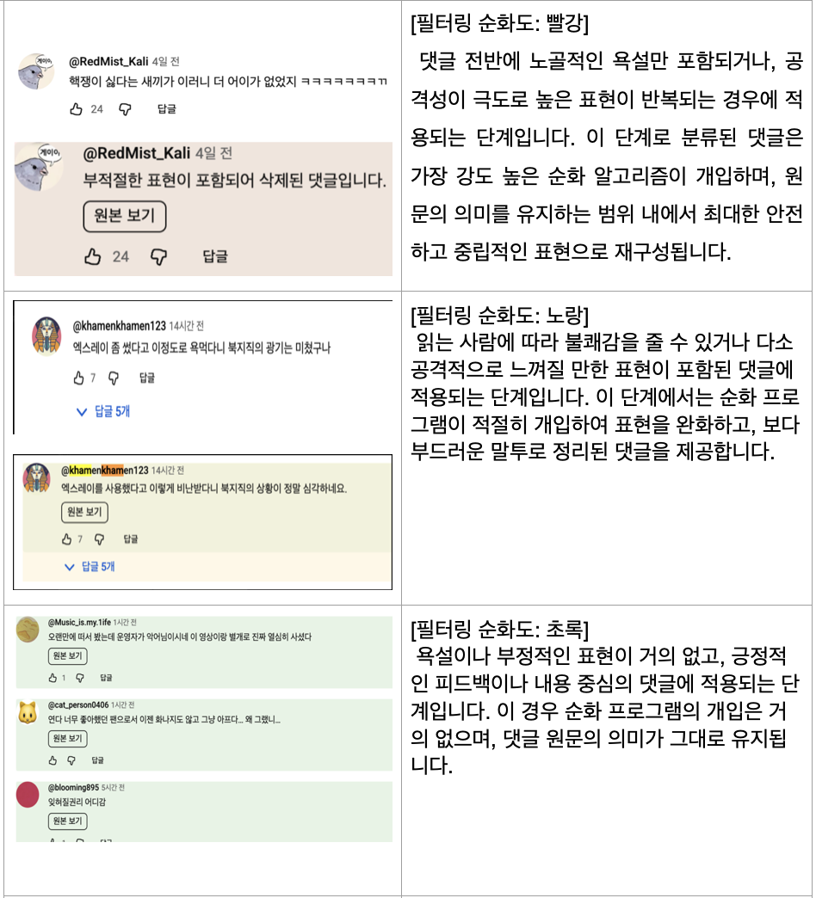
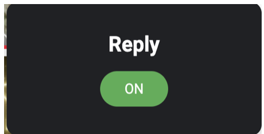
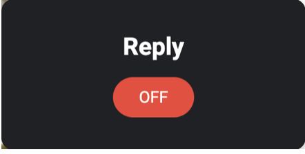
AI 기반 얼굴형 분석 및 외모 관리 서비스
얼굴 사진을 업로드하면 얼굴상을 분석하고 외모 관리 팁과 추천 스타일링 제품을 이미지화된 결과를 제공하는 웹 서비스입니다. 여러 AI 모델을 하나의 백엔드에서 처리하고, 외부 쇼핑몰 API을 가져와 연결했습니다.
외모 관리에 처음 관심을 갖는 사람들이 "어디서부터 시작해야 할지" 모르는 문제를 해결하고자 제작했습니다.
팀장, 프로젝트 기획, 팀원 간 소통 및 협업 조율, AI 모델 연동 및 테스트 담당, 프론트엔드 초안 개발
AI모델을 여러개를 하나의 백엔드에서 처리하는것이 어려웠습니다.
해결각 AI 모델의 API를 분리하여 관리하고, 중간 계층에서 처리 로직을 구현하여 문제를 해결했습니다.
의류·화장품 회사와의 협찬 연계, AI 파인튜닝을 통한 측정 정확도 및 개선점 퀄리티 향상을 목표로 합니다.
여러 AI 모델을 하나의 백엔드에서 처리하는 경험을 쌓았으며, 팀장으로서 역할 분배와 개발 단계를 원활하게 이끌었습니다.
선/후천적 장애인들을 위한 가이드&커뮤니티 플랫폼
선천적/후천적 장애인들이 자신의 장애 유형과 정도에 맞는 가이드를 얻고, 서로의 경험과 정보를 공유할 수 있는 커뮤니티 플랫폼입니다.
후천적으로 장애를 얻은 사람들이 빨르게 적응하여 일상으로 쉽게 돌아오게 하기 위함과 장애인들의 커뮤니티 플랫폼이 부족하다고 생각되어 제작하게 되었습니다.
프로젝트 기획과 전반적인 개발을 도맡았으며, 주로 백엔드를 메인으로 개발하였습니다.
기술적으로는 큰문제가 없었으나 커뮤니티 플랫폼 사용에 적합한 장애종류 구성과 그에 맞는 장애 가이드, 카테고리등을 정하는 것이 어려웠습니다.
해결여러 기사와 인터넷블로그 같은 글로 정보를 수집하고, 주변 장애를 가진 사람들에게 조언을 구하여 문제를 해결했습니다.
최대한 많은 장애를 지원하고 회원가입시 장애인임을 증명하여 악성사용자를 방지할 예정입니다.
프로젝트를 진행하면서 팀워크와 커뮤니케이션의 중요성을 배웠습니다. 또한, 사용자 중심의 개발 방식에 대해 더 깊이 이해할 수 있었습니다.
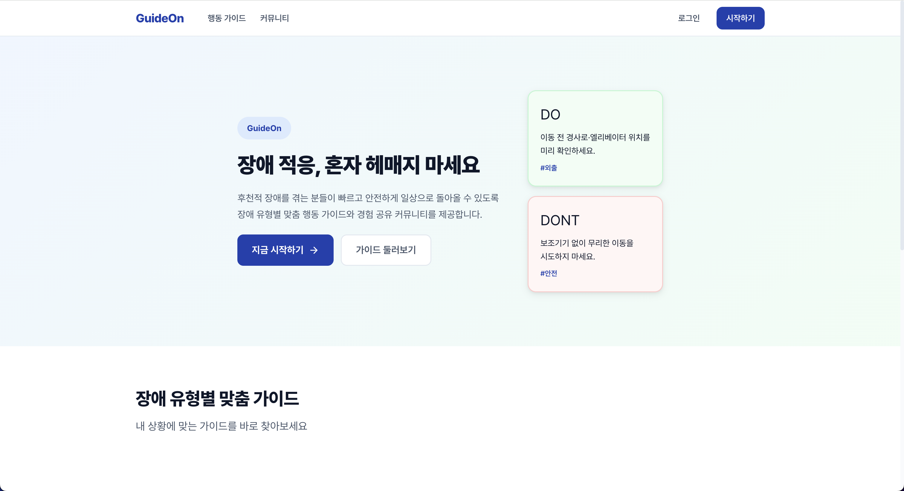
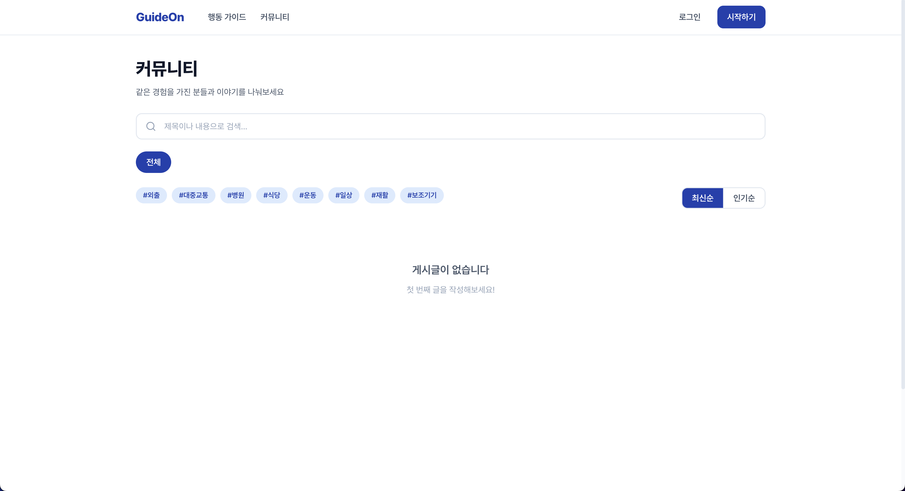
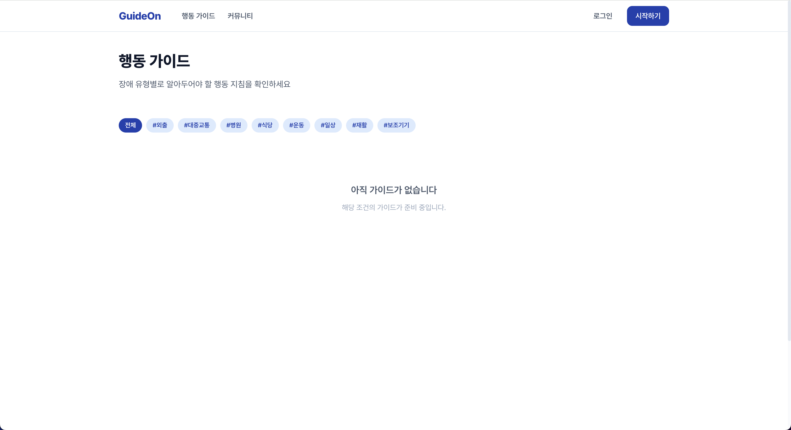
Spring Boot를 활용한 웹 기반 카페 관리 시스템
Spring Boot를 활용한 웹 기반 카페 관리 시스템입니다. 주문 관리, 회원 관리 등의 기능을 포함하고 있습니다.
Spring Boot를 활용하여 웹 서비스를 공부하기위해 제작하였습니다. 기존의 수작업 방식보다 효율적이고 편리한 관리를 제공하고자 하였습니다.
MySQL을 활용한 데이터베이스 설계와 Spring Boot를 이용한 API 개발을 진행하였습니다. 프론트엔드는 Mustache를 사용하여 간단하게 구현하였습니다.
단순 공부 프로젝트를 넘어 실제로 사용가능할 정도로 편리 시스템들을 추가하고 새로운 기능들을 개발할 예정입니다.
처음으로 데이터베이스 설계부터 API 개발까지 전반적인 프로젝트 진행 과정에서 많은 학습이 필요했습니다. 특히 service layer의 로직 구현이 어려웠습니다.
해결온라인 강의와 공식 문서를 참고하며 문제를 해결해 나갔습니다.
Spring Boot와 관련된 기술들을 실무에서 적용해보며 이해를 높일 수 있었습니다.
학교 학생들의 프로젝트 공유및 매칭, 관리 플랫폼
Spring Boot와 WebSocket을 활용한 학교 학생들의 프로젝트 공유 및 매칭, 관리 플랫폼입니다. 학생들이 자신의 프로젝트를 등록하고, 다른 학생들과 협업할 수 있는 환경을 제공합니다.
학교 학생들이 자신의 프로젝트를 쉽게 공유하고, 다른 학생들과 협업할 수 있는 플랫폼이 필요하다고 느꼈습니다.
해커톤 운영서비스 및 여러 기능들을 추가할 예정입니다.
Spring Boot와 WebSocket을 활용한 개발 경험이 부족하여 초기 설정과 디버깅이 어려웠습니다.
해결온라인 강의와 공식 문서를 참고하며 문제를 해결해 나갔습니다.
전혀 감이 없던 Spring Boot와 WebSocket 개발에서 환경 구축부터 직접 해내며 자신감을 얻었습니다. 다음에 혹시나 Spring Boot나 WebSocket을 사용해야 하는 일이 생긴다면 보다 익숙하게 다룰 수 있을 것입니다.
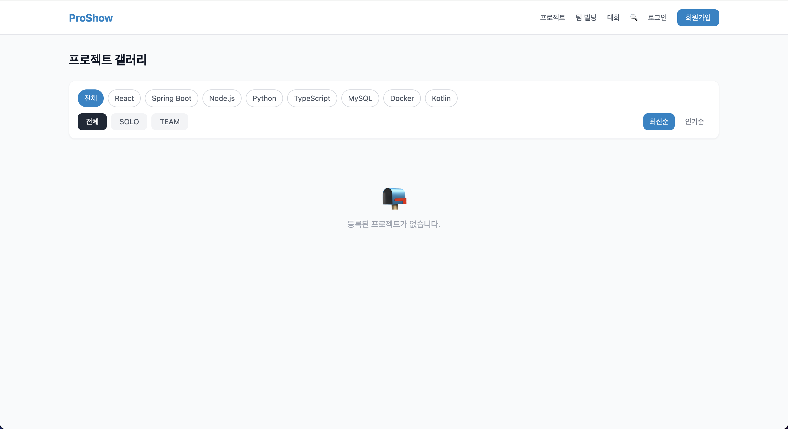
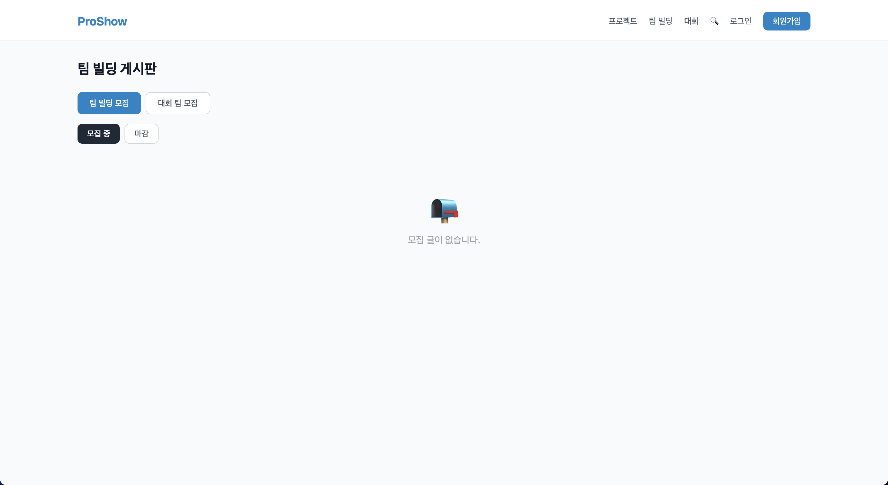
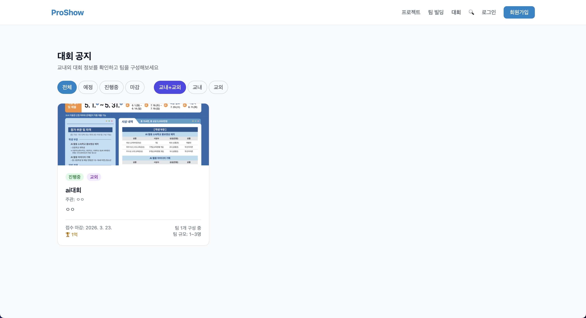
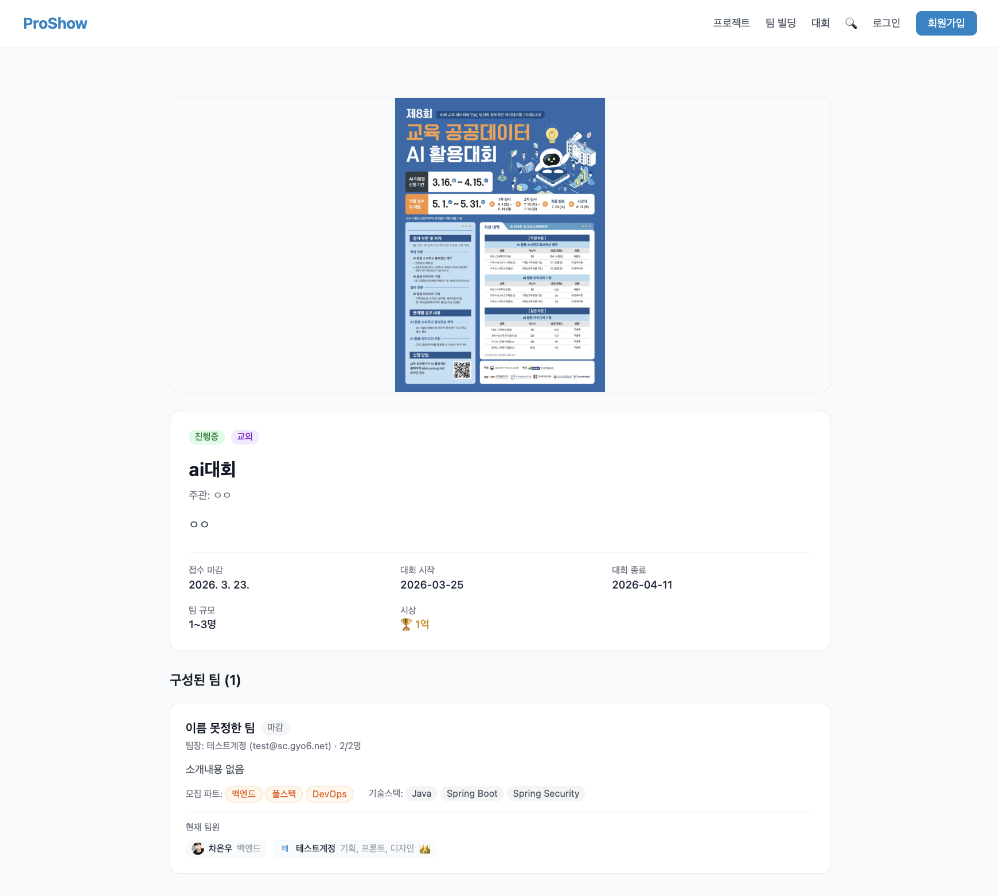
급식 API와 학교 이메일로 로그인가능한 웹사이트
경북소프트웨어마이스터고등학교의 급식을 확인하고 로그인 시 급식을 평가할 수 있고, 원하는 급식을 투표 할 수 있는 웹사이트입니다.
학교 급식에 대한 학생들의 의견을 수집하여 개선에 도움을 주고자 웹사이트를 제작하게 되었습니다.
사용자 맞춤형 급식 추천, 더 나은 UI/UX 개선 등 추가 기능을 구현할 예정입니다.
API 연동과 데이터베이스 설계 등 기술적인 부분에서 어려움을 겪었습니다.
해결API 문서를 참고하여 적절한 요청을 보내고, 데이터베이스 설계를 통해 데이터의 일관성을 유지하였습니다.
학교 전용 이메일 로그인 시스템과 급식 API 연동 방법을 배웠습니다.
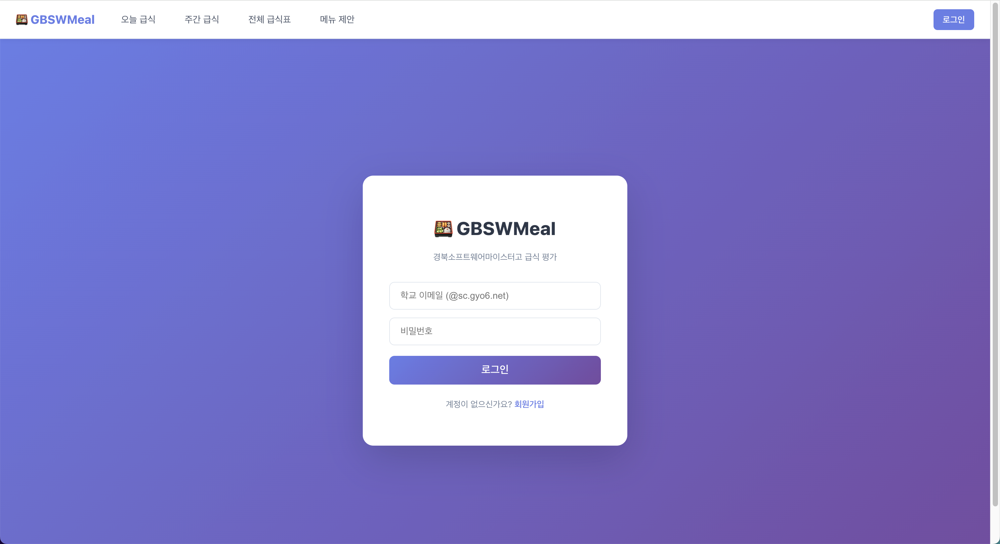
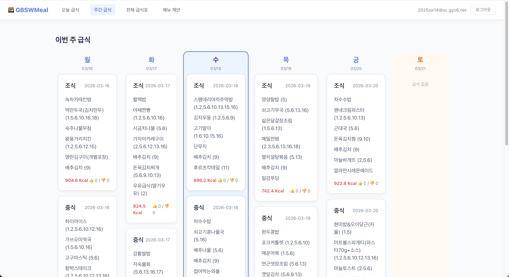
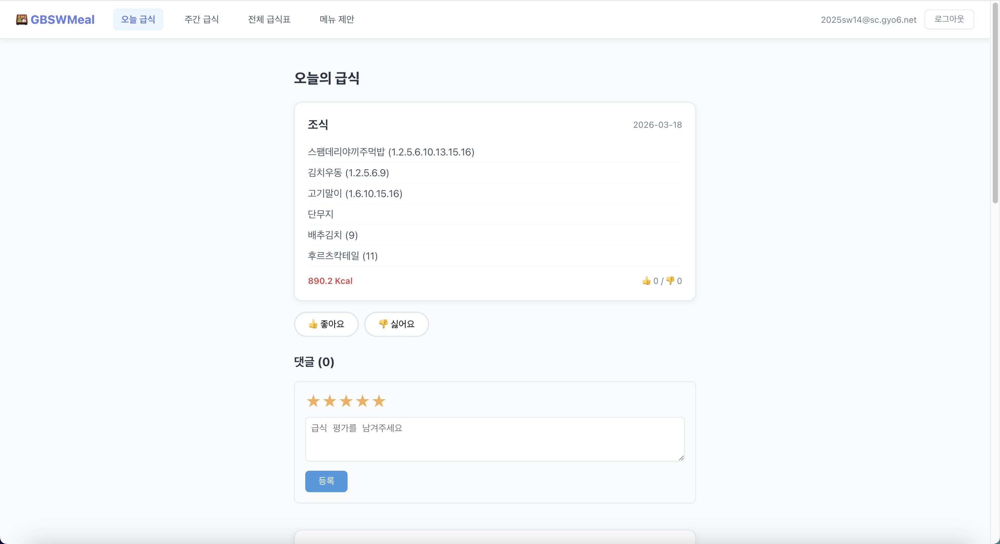
동계방학 기간 진행된 교내 프로젝트 경진대회에서 최우수상을 수상하였습니다.
프로젝트 : AWARE-AI
수상일 : 2026.03.12
2026 제4회 IT코딩 발명 아이디어 부문으로 출전하여 장려상을 수상하였습니다.
프로젝트 : GuideOn
수상일 : 2026.04.18